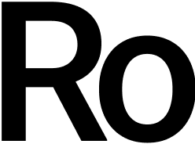
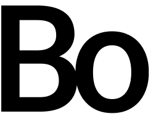
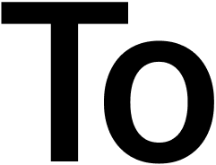
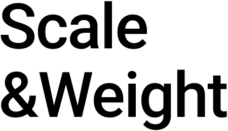
(1) 크기
(1) 크기
(2) 무게
그리고 질감도 있어용
Size Hierarchy
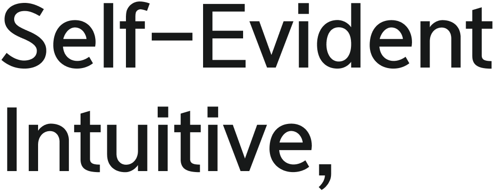
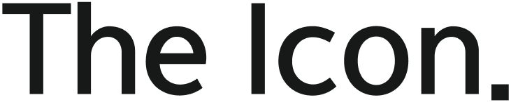
서체 크기 고찰
압도적인 크기는 메시지에 권위를 부여하며 시선의 시작점을 강제로 고정
Size Hierarchy
글자의 크기는 시선이 정보를 흡수하는 순서를 결정하며, 시각적 중요도를 뜻합니다.
글자의 크기는 시선이 정보를 흡수하는 순서를 정하며, 단순히 물리적 높낮이만을 의미하는 것이 아니라 시각적
무게이기도 하다. 같은 크기라도 서체마다 시각적 밀도가 달리 느껴지는 건 글자의 비율과 골격의 차이 때문이다
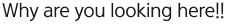
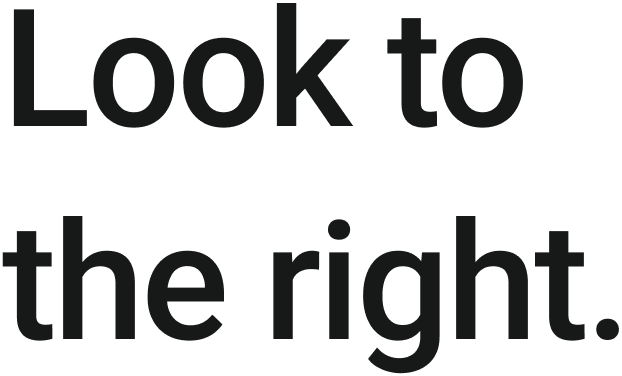
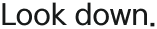
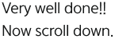
크기 비교
웨이트(Weight)는 텍스트에 물리적인 부피감을 부여하며, 굵은 웨이트는 메시지에 단단한 신뢰감을 실어주고 얇은 웨이트는 공간에 여백을 주어 세련된 인상을 남깁니다. 무게의 적절한 대비는 화면 안에서 시각적 리듬을 만들어내며, 같은 수치의 크기와 무게라도 서체의 골격과 자폭에 따라 전혀 다른 시각적 밀도를 형성하여 정보의 중량감을 재정의합니다. 이러한 무게의 변화는 단순히 획이 두꺼워지는 것을 넘습니다.
시선 유도에 대한 기록
주인공이 시선을 뺏으면 디테일은 그 뒤를 따라 조용히 정보를 완성.
60pt
408pt
Hi
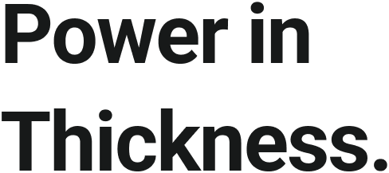
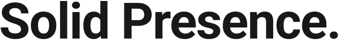
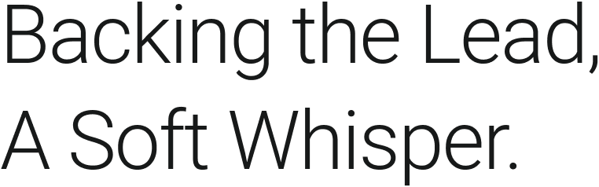
Size Weight
서체의 무게는 시선이 머무는 시간의 차이를
굵기의 대비는 시각적 중량을 조절하여 위계를 형성하며, 이는 단순히 글자의 부피감을 넘어 공간의 질서를 구축하는 핵심입니다.
웨이트(Weight)는 텍스트에 물리적인 부피감을 부여하며, 굵은 웨이트는 메시지에 단단한 신뢰감을 실어주고 시각적 중심축.
반면 얇은 웨이트는 공간에 여백을 주어 세련된 인상을 남기며, 정보의 위계를 조절하여 독자의 시선이 편안하게 머물게 합니.
무게의 균형
무게(Weight)는 활자에 체온과 밀도를 부여하며, 두꺼운 획은 메시지에 단단한 신뢰감을 실어주고 가는 획은 공간에 여백과 긴장감을 동시에 만들어낸다. 무게의 대비는 화면 안에서 시각적 리듬을 형성하며, 같은 크기와 수치라도 서체의 골격과 자폭에 따라 전혀 다른 밀도와 존재감이 빚어진다. 무게는 단순히 획이 두꺼워지는 것을 훨씬 넘어선다.
Font Weight
웨이트(Weight)는 활자에 질량과 체온을 부여한다.
Thin
Black
Hi
Scale
& Weight
& Weight
크기(Vertical)와 무게(Horizontal)의 조합은 서체가 공간에서 발휘하는 인상의 스펙트럼을 결정한다. 세로축을 따라 크기가 커질수록 조형적 특성이 강해지며, 가로축을 따라 무게가 더해질수록 메시지의 밀도와 중량감이 극대화된다. 아래 매트릭스는 두 서체가 각 조합에서 만들어내는 시각적 온도차를 보여준다. 숫자가 아닌 인상으로 읽어야 한다.
Font Weight
웨이트(Weight)는 활자에 질량과 체온을 부여하며, 두꺼운 웨이트는 메시지에
Roboto
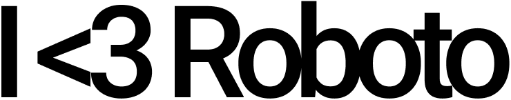
Helvetica
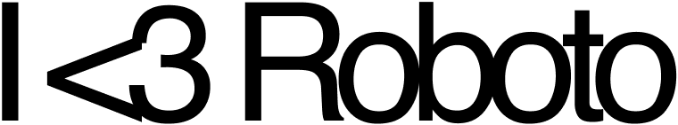
크기 비교
동일 포인트에서 Inter는 Roboto보다 시각적으로 더 크고 시원하게 느껴진다. 이는 Inter의 엑스하이트(x-height)가 더 높고 글자 사이의 균형이 최적화 되어있다.
무게 비교
Roboto는 기하학적이면서도 기계적인 곡률을 지녀 정돈된 느낌을 주며, Inter는 중성적이면서도 현대적인 서체의 골격을 가져 가독성 측면에서 더 높은 밀도감을 형성한다.
Size & Weight
타이포그래피 메시지 표현
크기와 무게 연출을 통한 포스터 제작
서체를 살아있는 식물처럼 대우함으로써, 서체 디자인이 가진 생명력과 관리의 중요성을 역설해보았습니다. 폰트의 본질은 결국 디지털 하드웨어(컴퓨터) 안에 있다는 점을 상기시키며 위트를 더합니다. 서체는 물이 아니라 ‘픽셀’을 먹고 자란다는 설정입니다.
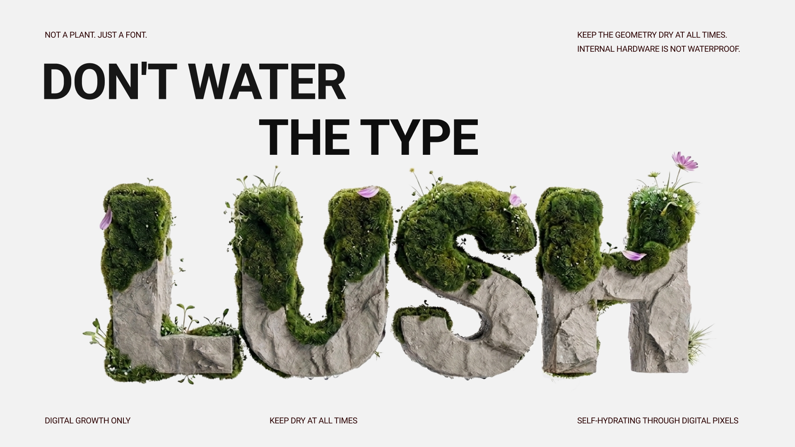